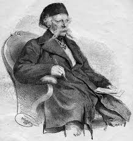

Home Page
Vuk je bio srpski filolog, reformator srpskog jezika, sakupljac narodnih umotvorina i pisac prvog recnika srpskog jezika. Vuk je najznacajnija licnost srpske knjizevnosti prve polovine 19. veka.
Rodjen je 26. oktobra 1787. godine u Trsicu, a preminuo 7. februara 1864. u Becu.
Zahvaljujuci svom rodjaku Jefti Savicu, jedinom pismenom coveku u Trsicu, Vuk je vrlo brzo stekao pismenost. Svoje skolovanje nastavio je u manastiru Tronosa.
Vuk se tokom Prvog srpskog ustanka vise istakao svojom pismenoscu nego ucestvovanjem u bitkama. U jesen 1804. Vuk odlazi u Sremske Karlovce u zelji da upise gimnaziju, ali nije uspeo u tome. Na kraju postaje ucenik Velike Skole koju je otvorio Dositej Obradovic.
1810. godine odlazi u Pestu gde upoznaje Luku Milovanova i Savu Mrkalja koji je napisao knjizicu o srpskoj azbuci "Salo debeloga jera libo azbukoprotest", u kojoj se zalagao za reformu jezika i pravopis. Ovo delo uticalo je na Vuka i njegovu reformu pisma.
Vukova borba za pravopis nije bila nimalo laka imajuci u vidu da je za svoje protivnike imao crkvu i mnoge vidjene ljude tog vremena. Medju njima se narocitao isticao Jovan Hadzic.
Iz ove duge i mukotrpne borbe Vuk 1847. godine izlazi kao pobednik.
Zahvaljujuci Vukovoj borbi danas smo narod bogatog jezika i kulture na sta treba da smo posebno ponosni. Na nama ostaje da sledimo Vukov put u borbi za pismenost i ocuvanje kulture.
